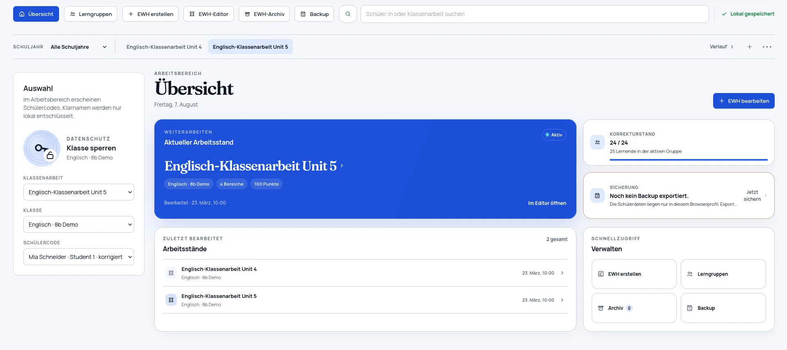
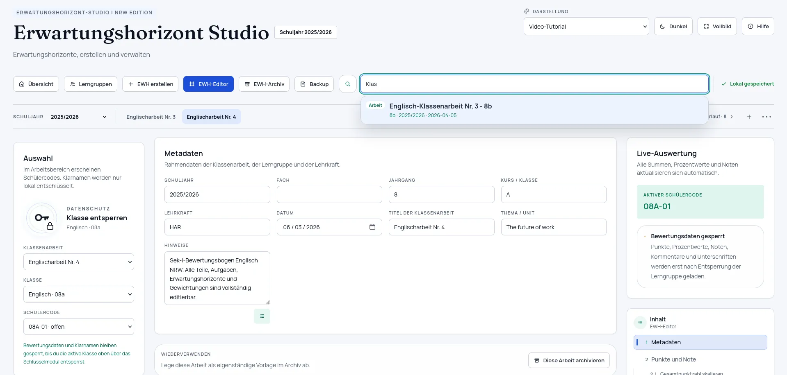
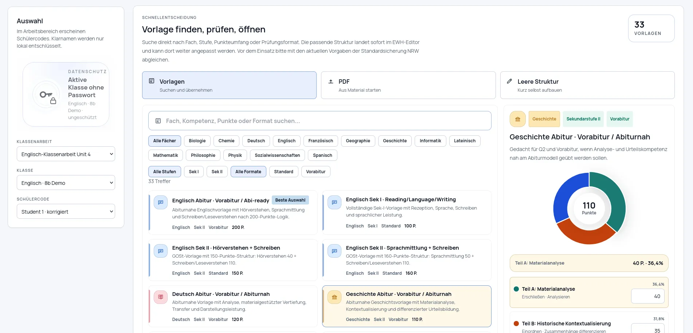

Strukturiert planen
Aufgaben, Kriterien, Punkte und Notenschlüssel gehören an einen Ort – und bleiben dort nachvollziehbar.
Für den echten Schulalltag gemacht
Erstelle Erwartungshorizonte, korrigiere transparent und behalte deine Lerngruppen im Blick – mit einem Werkzeug, das auf deinem Gerät bleibt.
Kostenlos · Open Source · Ohne Benutzerkonto

Weniger Reibung, mehr Übersicht
Kein überladenes Verwaltungssystem. Sondern die Werkzeuge, die zwischen Planung und Rückgabe zählen.
Aufgaben, Kriterien, Punkte und Notenschlüssel gehören an einen Ort – und bleiben dort nachvollziehbar.
Bewährte Erwartungshorizonte und Vorlagen lassen sich einfach archivieren und weiterentwickeln.
Arbeitsstände bleiben lokal im Browser. Schutz für sensible Inhalte und verschlüsselte Backups sind eingebaut.
Von der Idee bis zur Rückgabe
Starte mit einer Vorlage oder lege Kriterien und Gewichtungen selbst fest.
Übernimm deine Liste und halte den Korrekturstand im Blick.
Erstelle Übersichten, Bewertungsbögen und druckfertige Dateien direkt aus deinen Daten.


Datenschutz als Ausgangspunkt
Erwartungshorizont Studio ist local-first: Schülerdaten und Arbeitsstände liegen in deinem Browser auf deinem Gerät. Du entscheidest, wann du Sicherungen exportierst.
Mehr über Daten & PrivatsphäreBereit, loszulegen?
Starte direkt mit einem leeren, eigenen Arbeitsbereich – oder sieh dir erst alles unverbindlich mit Beispieldaten an.